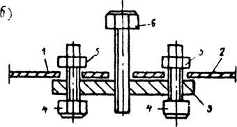

ГЛАВМОССТРОЙ при МОСГОРИСПОЛКОМЕ
ТЕХНИЧЕСКОЕ
УПРАВЛЕНИЕ
ИНСТРУКЦИЯ
ПО ТЕХНОЛОГИИ МОНТАЖА ВОЗДУХОВОДОВ
С БЕСФЛАНЦЕВЫМИ КОНСТРУКЦИЯМИ СТЫКОВ
ВСН 182-82
Москва - 1983
Ордена Ленина Главное управление по жилищному
и гражданскому строительству в г. Москве
ГЛАВМОССТРОЙ при МОСГОРИСПОЛКОМЕ
ТЕХНИЧЕСКОЕ УПРАВЛЕНИЕ
ИНСТРУКЦИЯ
ПО ТЕХНОЛОГИИ МОНТАЖА ВОЗДУХОВОДОВ
С БЕСФЛАНЦЕВЫМИ КОНСТРУКЦИЯМИ СТЫКОВ
ВСН 182-82
Главмосстрой
Москва - 1983
Настоящая Инструкция разработана лабораторией инженерного оборудования зданий НИИМосстроя с участием отдела № 7 Государственного проектного института (ГНИ) "Проектпромвентиляция" на основании проведенных экспериментальных исследований и обобщения опыта монтажа объектов с новыми конструкциями бесфланцевых соединений стальных вентиляционных воздуховодов, уплотняемых герметизирующими лентами на основе невулканизированных каучуков. "Инструкция" содержит сведения по областям применения рекомендуемых соединений, их конструкциям, технологии сборки и герметизации, а также по технике безопасности.
"Инструкция" согласована с Управлением монтажных, электромонтажных и санитарно-технических работ Главмосстроя, Главмосмонтажспецстроем, трестами Моссантехстрой №№ 1 и 2.
Применение герметизирующей ленты для выполнения вентиляционных работ согласовано с городской санитарно-эпидемиологической станцией и Управлением пожарной охраны ГУВД Мосгорисполкома,
"Инструкцию" разработали: к.т.н. Я.Б. Алескер, инженеры НИИМосстроя С.С. Бывшев, Н.Н. Кузнецова, Н.В. Митрофанова и ГПИ Проектпромвентиляиия В.Я. Меклер, В.И. Павленко.
|
Главмосстрой Техническое управление |
Ведомственные строительные нормы Инструкция по технологии монтажа с бесфланцевыми конструкциями стыков |
ВСН 182-82 Главмосстрой |
1.1. Настоящая "Инструкция" распространяется на монтаж воздуховодов и фасонных деталей круглого сечения спирально-сварной, спирально-замковой и прямошовной конструкции диаметром до 630 мм с гладкими концами.
1.2. Для воздуховодов прямошовной конструкции с целью обеспечения их жесткости и формоустойчивости в процессе транспортирования и монтажа на расстоянии 60 мм от концов воздуховодов следует выполнять двойной зиг.
1.3. Соединения с применением герметизирующих лент обеспечивают соосность установки воздуховодов, жесткость и прочность отдельных стыков и укрупненных блоков воздуховодов.
1.4. Для выполнения монтажных работ рекомендуется самоклеящаяся герметизирующая лента из невулканизированных бутилкаучуков производственного объединения Мосстройпластмасс Главмоспромстройматериалов "Герлен" (ТУ 400-1-165-79).
1.5. Температура транспортируемого воздуха при постоянном режиме работы систем допускается до 40°С, при периодическом - до 60°С.
|
Внесена |
Утверждена 2 августа 1882 г. |
Срок введения в действие 1 октября 1982г. |
2.1. В конструкциях бесфланцевых соединений воздуховодов герметичность стыков обеспечивается с помощью герметизирующих лент, а прочность и жесткость (для вертикальных воздуховодов - самонесущая способность) с помощью монтажных фиксирующих элементов. Сборка отдельных деталей и мелких узлов воздуховодов в укрупненные блоки осуществляется также с помощью монтажных фиксирующих элементов.
2.2. Конструкция с иглоконусными фиксирующими элементами (рис.1) может выполняться либо без предварительного прокалывания (пробивки) отверстий в стенках воздуховодов с расположением болта между воздуховодами, либо путем образования отверстия под болт на одном из концов воздуховодов.
2.3. Конструкция с винтовыми фиксаторами (рис. 2) предназначена для сборки воздуховодов и укрупнения их узлы на нулевой отметке. На концах воздуховодов должны быть монтажные отверстия. Отверстия могут выполняться как на заготовительных предприятиях, так и в процессе монтажа системы. В монтажных условиях отверстия выполняются на нулевой отметке путем их просверливания электродрелями, прокалывания с помощью дыроколов (чертеж - №937/1 треста "Сантехдеталь" и др.) либо пробивки с помощью ручных пробойников.
3.1. До начала монтажа необходимо сделать разбивку вентиляционной системы на укрупненные узлы (в соответствии с местными условиями), определить и наметить последовательность их монтажа, а также установки креплений. При использовании рекомендуемых соединений длина укрупненных блоков допускается до 12-15 м.
3.2. Сборка блоков осуществляется в следующей последовательности:
размечают места установки фиксирующих элементов и отверстий в стенках воздуховодов и фасонных деталей;
пробивают или прокалывают отверстия;
соблюдая соосность собираемых воздуховодов, устанавливают фиксирующие элементы и жестко закрепляют их с помощью монтажных болтов;
производят уплотнение стыка путем наклеивания герметизирующей ленты;
собирают отдельные детали и мелкие узлы на инвентарных подставках в укрупненные блоки;
устанавливают хомуты и другие средства крепления воздуховодов;
стропят собранный узел и траверсу инвентарными или полуавтоматическими стропами;
поднимают узел воздуховода на проектную отметку и подвешивают его к заранее установленному креплению;
проверяют правильность положения с монтированного узла и соединяют его с ранее смонтированным узлом воздуховода с помощью монтажных фиксирующих элементов, уплотняют стык с помощью герметизирующей ленты.
3.3. В качестве герметизирующего материала используются герметизирующая лента "Герлен" - нетвердеющая герметизирующая эластопластичная лента, изготовляемая на основе синтетического каучука, мягчителя, смол и наполнителей.
При изготовлении герметизирующую ленту "Герлен" закатывают вместе с прокладочным материалом (силиконизированной бумагой) в рулоны на картонные втулки.
3.4. Герметизирующая лента предназначена для поверхностной герметизации. Поверхностная герметизация может быть местной (для локальных повреждений и неплотностей воздуховодов) и общей (для герметизации стыков в целом).
3.5. Имеются две разновидности ленты "Герлен": недублированная (типа "Герлен") и дублированная нетканым материалом (типа "Герлен-Д"). Для выполнения рекомендуемых соединений следует использовать лент: "Герлен-Д". При выполнении бандажных соединений в желобок бандажей могут укладываться полоски недублированной ленты "Герлен".
3.6. Герметизирующая лента выпускается следующих размеров:
длина - 12 м,
ширина - 80, 100, 120, 200 мм,
толщина - 3 мм.
Допускаемые отклонения:
по длине ±0,1 м,
по ширине ±5 мм,
по толщине ±0,5 мм.
При широком использовании ленты для вентиляционных работ возможно изготовление ленты шириной 50-60 мм.
В обозначении герметизирующей ленты после названия указывается ширина ленты. Например, "Герлен-100" означает, что герметизирующая лента имеет ширину 100 мм.
3.7. Рекомендуется следующая ширина ленты для соединения воздуховодов:
диаметром до 400 мм - 50-80 мм,
диаметром более 400 мм - 100-120 мм.
3.8. Герметизирующая лента "Герлен-Д" должна соответствовать требованиям технических условий и не иметь разрывов и сквозных отверстий.
Температуростойкость должна быть не менее 60°, водопоглощение не более 0,3%. Прочность при растяжении не менее 1,5 кг/см2. Показатели температуростойкости, водопоглощения и прочности при растяжении определяются заводом-изготовителем. Определение водопоглощения производятся после экструдирования ленты перед поступлением ее на дублирование.
Показатель температуростойкости ленты определяется согласно ТУ 400-1-165-79 по провисанию ленты в зазоре между двумя стеклянными пластинами, на которые нанесена лента, после двухчасового термостатирования.
3.9. Процесс герметизация выключает следующие стадии:
подготовка поверхности деталей и узлов;
нанесение герметика;
пооперационный контроль и окончательный контроль качества герметизации;
ремонт дефектных участков.
3.10. Достаточно прочное сцепление герметика с подложкой (субстратом) обеспечивается при правильной подготовке поверхности, подлежащей герметизации. Предварительная обработка поверхности заключается в ее очистке от различного рода загрязнений и коррозии. При герметизации поверхность очищают от металлической стружки, пыли, грязи волосяными щетками или ветошью (чистыми обтирочными концами).
3.11. Герметизируемая поверхность должна быть сухой.
Оптимальными условиями нанесения герметиков являются температура 18-25ºС и относительная влажность воздуха 50-75%.
Работы по герметизации не рекомендуется производить при отрицательных температурах, когда поверхность, на которую наносят герметик, может быть покрыта незаметной пленкой льда, а также в дождливую погоду.
3.12. При нанесении герметика на сильно нагретые поверхности (при работе на солнце и т.п.) он может быстро подвулканизироваться со стороны поверхности, и требуемая адгезия не будет обеспечена.
3.13. При наклеивании ленты рекомендуется соблюдать следующие технологические приемы. Край ленты освобождается от защитной силиконизированной бумаги на 20-30 мм, лента приклеивается на месте стыка и конец идет внахлест со свободным краем длиной 20-30 мм.
При наклеивании ленты запрещается ее вытягивать. Наклеивать прикатывать ленту (вручную или резиновым валиком от центра к краям в поперечном направлении) следует так, чтобы поверхность ленты была ровной, баз складок, вздутий и воздушных пузырей. Лента должна плотно приклеиваться на все неровности поверхности.
3.14. Контроль качества робот по герметизации стыков лентой осуществляется пооперационной проверкой:
соответствия времени применения герметизирующей ленты ее жизнеспособности;
качества подготовки поверхности (степень ее очистки) и ее температуры;
качества приклеивания ленты.
Поверхность ленты должна быть без складок, вздутий и воздушных пузырей. Лента должна быть плотно приклеена без пропусков.
3.15. При обнаружении негерметичности воздуховодов (трещина, пробой в металле) производят ремонт путем наложения герметизирующей ленты на место дефекта. В случае неудовлетворительного качества герметизации на большой поверхности, приводящего к нарушению герметичности конструкции, поверхность полностью очищают от герметика и производят полную повторную герметизацию.
3.16. Крепления воздуховодов с бесфланцевыми стыками, уплотняемыми герметизирующими лентами, устанавливаются согласно СНиП III-28-75, как для воздуховодов с фланцевыми соединениями.
3.17. Крепление подвесок и растяжек непосредственно к крепежным элементам бесфланцевых стыков не допускается.
3.18. При необходимости окраски бесфланцевых стыков воздуховодов, уплотняемых герметизирующими лентами (например, в зданиях с повышенными эстетическими требованиями) нанесение лакокрасочных материалов производится по дублирующему слою ткани.
4.1. Монтажно-заготовительное предприятие должно комплектовать заказы на бесфланцевые конструкции воздуховодов фасонных деталей соответствующим количеством фиксирующих элементов (по 3 штуки на каждое соединение).
4.2. Прямые участки воздуховодов транспортируются в вертикальном положении. Допускается укладка воздуховодов меньшего сечения в воздуховоды большего сечения.
4.3. Запрещается бросать воздуховоды при погрузке и разгрузке с транспортных средств.
4.4. Складирование и хранение воздуховодов на приобъектных складах следует производить с соблюдением следующих требований:
прямые участки устанавливать вертикально на деревянные инвентарные подкладки (ТУ-100-1-225-75);
фасонные части укладывать в штабели высотой не более 2-х метров, не допуская повреждений их торцов.
4.5. При контейнерной доставке воздуховоды следует оставлять в контейнерах.
4.6. Герметизирующая лента "Герлен-Д" доставляется на место строительства в рулонах, уложенных в картонные коробки по 4 рулона. В коробках между рядами рулонов устанавливают прокладки из гофрированного картона (ГОСТ 7376-55). Рулоны устанавливают в вырезы прокладок и фиксируют картонными вкладышами. На наружную поверхность рулона надевают картонное кольцо. Масса коробки с "Герленом" не должна превышать 25 кг.
4.7. При транспортировке герметизирующей ленты "Герлен-Д" должны быть приняты меры по предохранению её от повреждений, увлажнения и загрязнения.
4.8. Коробки с рулонами ленты должны хранится и транспортироваться в положении, обеспечивающем вертикальное расположение рулонов.
4.9. При погрузочно-разгрузочных работах коробки с рулонами бросать категорически запрещается.
4.10. Герметизирующая лента должна храниться в закрытом сухом помещении.
Срок хранения ленты – 6 месяцев со дня изготовления.
5.1. Приемка работ по монтажу воздуховодов с бесфланцевыми стыками производится на основе результатов предпусковых испытаний, а также наружного осмотра и проверки действия смонтированных систем.
5.2. При предпусковых испытаниях должны быть выявлены неплотности в воздуховодах и местах соединения.
5.3. Степень неплотностей в воздуховодах и их соединениях определяется по величине подсоса или утечки воздуха.
В соответствии со СНиП III-28-75 величина подсоса или утечки воздуха в воздуховодах не должна превышать при длине сети до 50 метров - 10%, а при большей длине сети - 15% производительности вентилятора.
На основе исследований и опыта монтажа экспериментальных объектов установлено, что величина утечки воздуха при применении герметизирующих лент "Герлен-Д" не превышает 1,0-1,5%.
5.4. Воздуховоды, уплотняемые лентой "Герлен-Д", до испытаний должны непрерывно проработать в течение 7 час.
5.5. Выявленные в результате испытаний неплотности должны быть устранены при помощи герметизирующей ленты "Герлен-Д".
5.6. В приемочных актах следует освидетельствовать качество выполнения герметизационных работ.
6.1. При производстве вентиляционных работ с герметизирующими лентами необходимо выполнять требования СНиП III-4-80 "Техника безопасности в строительстве" (разделы 2, 4, 12, 14), "Указания по пожарной безопасности для рабочих и инженерно-технических работников Главмосстроя"; "Правил пожарной безопасности при производстве строительно-монтажных работ", утвержденных ГУПО МВД СССР, а также требования настоящей "Инструкции".
6.2. Рабочие, выполняющие работы по герметизации, должны быть обучены безопасным приемам выполнения работ. До начала герметизации они должны пройти инструктаж по технике безопасности.
6.3. При работе необходимо пользоваться хирургическими резиновыми или биологическими перчатками. В случае длительной работы с герметизирующей лентой под резиновые перчатки следует надевать хлопчатобумажные перчатки. Перед тем, как надевать резиновые перчатки, руки рекомендуется намылить мылом и дать им просохнуть. После окончания работы резиновые перчатки следует сразу же снять и вымыть.
6.4. Рабочие, выполняющие работы с герметизирующей лентой, должны быть обеспечены бытовыми помещениями в соответствии с существующими санитарными нормами.
Рис.1. Конструкция бесфланцевого соединения воздуховодов, уплотняемых герметизирующими лентами, с иглоконусными фиксирующими элементами:
а) общий вид соединения, б) узел соединения в разрезе, в) нижняя пластина с иглоконусными элементами;
1, 2 - воздуховоды; 3 - иглоконусные элементы;
4, 5 - нижняя и верхняя пластины; 6, 7 - болт с гайкой;
8 - плоская грань болта (предотвращает взаимный поворот пластин);
9 - герметизирующая лента; 10 - отверстие под болт на конце воздуховода

Рис. 2. Узел бесфланцевого соединения воздуховодов с винтовыми фиксирующими элементами;
а, б - варианты с верхним и нижним расположением болтов, 1, 2 - воздуховоды; 3 - пластина; 4 - болт с головкой; 5 - гайка, 6 - вспомогательный съемный болт
СОДЕРЖАНИЕ